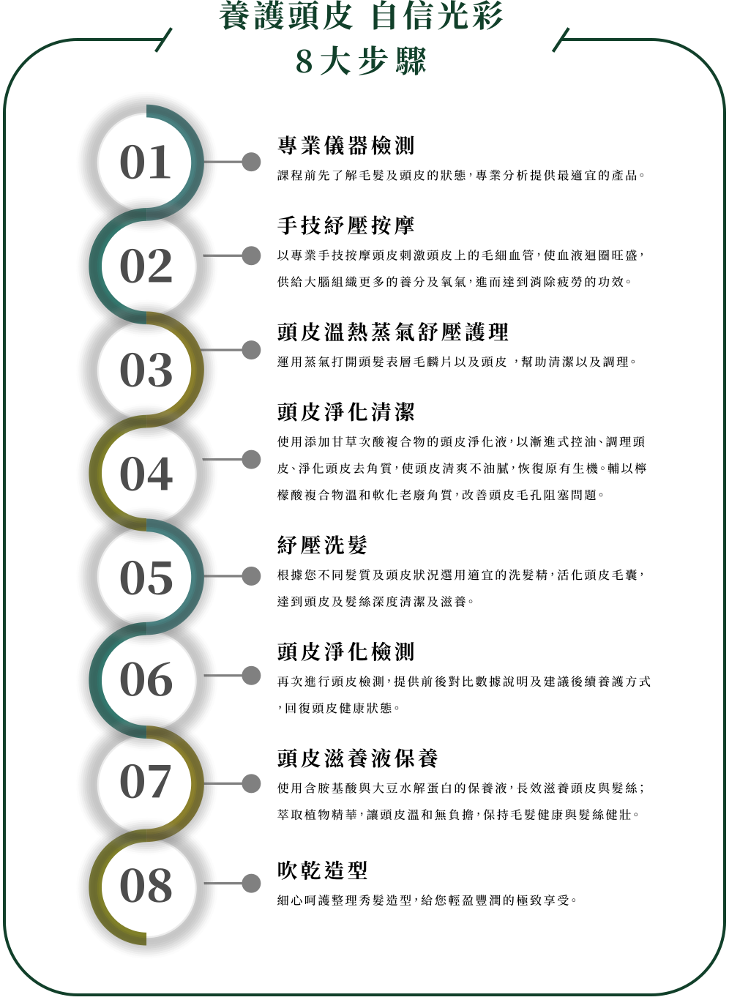

做好頭皮護理，更能有效減緩頭皮各種狀況帶來的不適感。
頭皮清爽，才能維持孕期間愉悅心情。
專業檢測儀分析頭皮屬性，深層淨化清潔，改善各式頭皮問題。
三大原則養護妳的孕期頭皮
- 保持頭皮乾爽 -
- 市面上有販售舒緩頭皮的產品，都能降低頭皮發炎的症狀，但若有特殊體質的孕媽咪，孕期賀爾蒙的改變，頭皮狀況可能會比一般人還要多，困擾不是只是頭皮出油，而是頭皮乾癢，甚至脫皮脫屑。有此類困擾的孕媽咪，平常洗髮時，適度清潔就好！
重要的頭皮一定要吹乾喔！也千萬別使用強力洗髮精或過度清潔，這樣反而會加重症狀。
- 定時清洗 -
- 適度有效的清潔頭皮角質，能舒緩孕期帶來的頭皮悶熱感，減緩油脂生成，就較不容易出現皮屑，乾癢的狀況。建議使用溫和一點的洗護產品，對於孕期中的媽咪來說會是比較適宜的喔！
- 不過度搔抓 -
- 洗頭時千萬不要用指甲抓，這樣容易造成頭皮受傷，建議將洗髮精倒在手上搓泡後再以指腹按摩頭皮。做好適度的深層清潔及護理，不只養護頭皮，也可以維持髮絲生長的健康環境，讓產後掉髮狀況減少喔！
身為孕媽咪的妳，更應該備受寵愛
每一道環節為您細心呵護
頭皮的老化速度比臉部肌膚快6-8倍，要有健康頭髮，絕不能忽視頭皮護理的重要性。

- 頂級養護產品孕期使用天然產品，安心養護
- Take Hair所使用的覺亞頭皮養護保養系列產品，堅持只添加養護所需成分，清潔的同時修護髮絲與頭皮。
不僅淨化頭皮，打造健康髮根基礎，更給予髮絲茁壯、輕盈、健康的養分。

- 頭皮檢測諮詢孕期油脂分泌旺，專業檢測
- 透過專業頭皮檢測諮詢，可清楚了解頭皮現況，量身訂製您個人頭皮護理方程式，更結合經絡按摩手法紓壓、減壓、潔淨、養護一氣呵成。

- 舒適的環境身負重任的妳，值得更好的體驗
- 過度的緊張也容易對頭皮產生不好的影響，我們提供整潔舒適的沙龍環境，半開放式的紓療空間，隱私不被打擾，讓您徹底放鬆心情。
- 專業頭皮養護師懂妳的需求，專業的呵護
- 全程安排專職頭皮養護師為您頭皮做檢測及說明，讓你更加了解頭皮狀況及養護建議，讓您安心養護。

- 頂級紓壓頭皮護理
- (頭皮護理＋采耳)
- NT＄1980
- 服務時間：120分鐘
以經典頭皮護理流程，輔以傳統古法采耳技法，達到深層紓壓，耳目一新的暢快感受。
采耳流程
眼部熱敷舒緩加上專業手技按摩手部，達到深層放鬆舒緩的效果。再運用耳道內視鏡檢查耳道狀況，並使用孔雀羽毛、浮絨毛、大音叉等專業工具清掃紓壓，進而改善睡眠與壓力並刺激末梢神經達到顱內高潮的酥麻放鬆感受。最後進行掏耳清潔耳垢，恢復耳道通氣舒暢，提神醒腦作用。

- 深層修護頭皮護理
- (頭皮護理＋哥德式四段護髮)
- NT＄1880
- 服務時間：150分鐘
經典頭皮護理流程,重拾你頭皮健康，加上小分子多階段式修復髮絲，豐盈潤澤，打造內外兼好的秀髮完美狀態。
哥德式四段護髮
哥德式四段護髮是結構式護髮的一種，是運用較小分子來去修補受損頭髮的毛鱗片，使用四種不同功效護髮劑，深層修補髮絲水份，並修護毛髮內部的CMC脂質層，形成滋潤感不易消失的保濕皮膜，達到長效時間的柔順效果！

孕媽咪更需要著重產品的安全性
頂級養護產品-覺亞Juliart
- 不含人工香料
- 溫和低刺激性
- 高度保濕清潔
- 系列髮品入圍Pure Beauty Global Awards 2020最佳髮品
您的頭皮及秀髮，需要被良心對待
- 頭皮護理療程全程使用覺亞系列品牌。
- 不添加人工香料及劣質色素，志在提供最純淨天然優質的髮品，保護頭皮，呵護秀髮。
- 專門針對頭皮角質堆積、油頭、頭皮屑、敏感、稀疏五大頭皮問題研發的系列產品。
- 並以胺基酸為基底，使用天然、弱酸性的草本成分，為您帶來溫和低刺激性的清潔與保養。

孕婦保養，應該交給專業的來
Take Hair Salon聘用專業頭皮養護師，提供給您最專業的知識，最有效的養護。
別於坊間沙龍的頭皮護理療程，全權交由設計師操作，針對您的造型可塑造完美髮型，但頭皮的事，我們強烈建議，還是需要由受過專業課程及訓練的頭皮師操刀，才能給您最完善的養護建議。
別於坊間沙龍的頭皮護理療程，全權交由設計師操作，針對您的造型可塑造完美髮型，但頭皮的事，我們強烈建議，還是需要由受過專業課程及訓練的頭皮師操刀，才能給您最完善的養護建議。
將您的秀髮 捧在手心上呵護
Take Hair. We Take Care of Your Hair.
Take Hair. We Take Care of Your Hair.